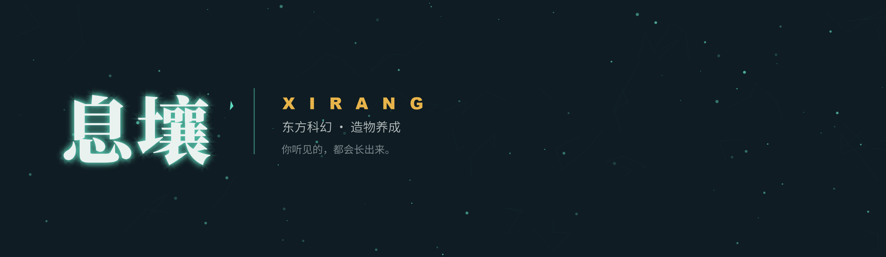
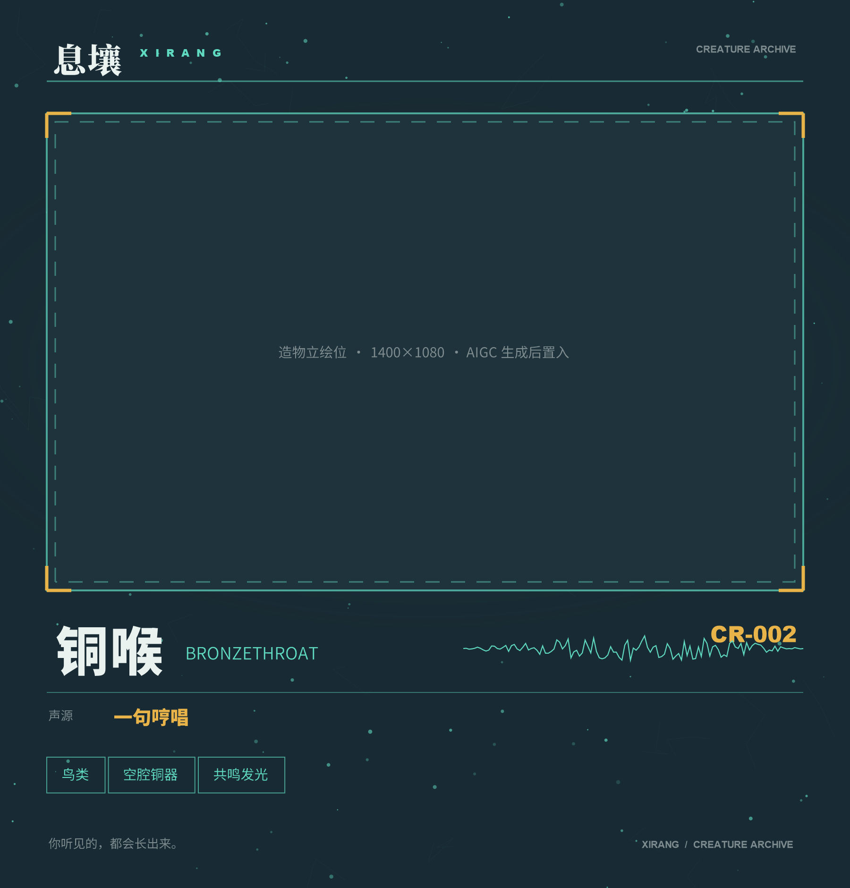
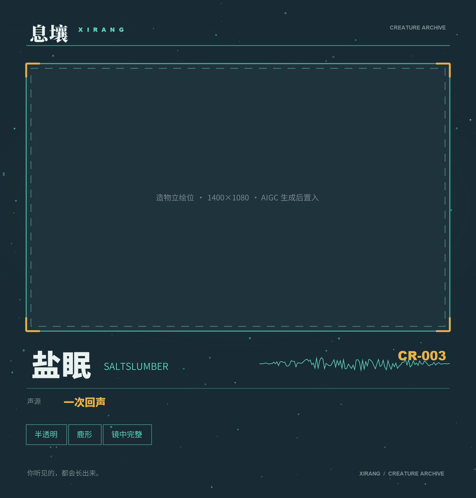

PROJECT 05 · 游戏宣发 / 商店物料
你听见的，都会长出来。
原创东方科幻造物养成企划的发行物料包。以下全部按真实商店规格制作：TapTap 素材规范与 Steam 分阶段清单。
原创东方科幻造物养成企划的发行物料包。以下全部按真实商店规格制作：TapTap 素材规范与 Steam 分阶段清单。
一声叹息长出苔，一句哼唱长出藤，一次呼喊长出兽。
玩家做的事只有一件：种下一个声音，看它长成什么。不同声响嫁接，长出不同的它；你给它取的名字，会成为它的属性。
这不是一个关于战斗的企划。它关于「我做的事能让什么东西长出来」。

以下每一项的尺寸、比例、安全区都来自发行平台的实际规范：TapTap 素材规范（ICON 512×512、视频封面 1256×706、封面图 1920×1080 且焦点须在 1760×920 安全区内）与 Steam 商店物料清单。
做宣发物料的第一件事，是知道它要交给谁、放在哪里、什么能放什么不能放。
三个种子持有者，分别代表三种与息壤的关系：耐心、锋利、空无。每张宣传图配一句台词——角色宣发不解释性格，让台词自己说。
三个人的视觉签名 硯是呼吸的光（身体明暗随呼吸变化）；灼是声波具象化（铜管发声时空气出现同心波纹）；澪是倒影比本体更清晰（镜像是实心，本体半透）。
没有签名的角色只是好看，成不了设定。
造物由声音长成，形态直接反映声源。这套标本册版式同时用作商店截图素材——统一页眉、标本号、名牌、声源栏、声纹图形、形态标签。


平台推荐的视频长度是 20 秒（最长不超过 1 分钟）——这个长度的用意是让玩家最快理解核心玩法。
而 Steam 的经验是：预告片的前 5 秒必须出现不寻常的核心机制。所以这一版把「种下声音、长出生物」直接放在开头，不做铺垫。
为什么不做剧情向预告片。商店视频的任务是让人在 20 秒内理解这个游戏在玩什么，不是讲一个故事。剧情留给后续的版本 PV——那是已经对游戏产生兴趣的人才看的。
胶囊图（商店主视觉）的平均点击率低于 2%，能超过 4% 的才会拿到额外的曝光位。所以主视觉不能靠"看着不错"来判断，要过三个检验：
模糊之后还认得出形状吗？如果糊掉就散了，说明画面依赖细节而不是轮廓。
去掉颜色还分得开吗？只靠色彩对比撑起来的画面，在小尺寸缩略图里会失效。
放在同赛道前几名旁边还认得出吗？这一步筛掉的是"好看但没有辨识度"的主视觉。
为什么把检验放进作品集。因为"我做了一张主视觉"和"我知道这张主视觉要怎么被检验"是两件事。
前者的判断标准是审美，后者的判断标准是它能不能在商店里跑赢——宣发设计最终是要对点击率负责的。
商店页面不是一个版本发一次，而是每个阶段重点不同。物料要按漏斗三层排优先级：
Pre-landing（胶囊图 + 标题）决定有没有人来 ｜ Above the fold（预告片、标签、短描述、前 2–3 张截图）决定留不留下 ｜ Below the fold（详细介绍、GIF）决定买不买
| 阶段 | 优先层 | 要交付的物料 | 验收标准 |
|---|---|---|---|
| 1 · 公布 | Pre-landing | 标题、类型标签、主视觉、预告片、截图、短描述 | 主视觉通过模糊 / 灰阶 / 竞品并排三项检验 |
| 2 · Demo 上线 | Above the fold | 实机预告片（前 5 秒出核心机制）、≥5 张 1920×1080 截图、明确的预约引导 | 每张截图展示不同系统，且必须是实机不是概念图 |
| 3 · 测试节 | 刷新 Above the fold | 新预告片、本地化短描述与核心卖点 | 预约量达到门槛再参加，否则等下一届 |
| 4 · 上线周 | Below the fold | 2–3 个 GIF（各不超过 12 秒）、技能树或 UI 静态图、上线预告片 | 回答"这游戏有多少内容"和"品质稳不稳" |
顺序本身就是判断。很多人在第 1 阶段就去写长篇详细介绍——但那时候还没人点进来，写再好也没人看。而主视觉做差了，后面全部白费。宣发的第一课是把力气花在漏斗最上层。